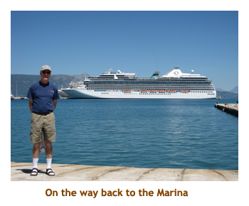
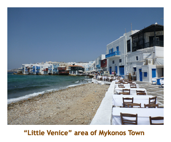

[ Home ] [ Travel ] [ Photography ] [ Pets ] [ Games] [ Rowing] [ Physics ]


Cruising on the Oceania Marina
Travel
Cruises
Past Cruises (Diaries)
Future Cruises
Rogues Galleries
Land Trips
Diaries (Land Trips)
Hawai'i - Big Island - 04'01
Hawai'i - Maui - 05'02
Hawai'i - Big Island - 04'03
Hawai'i - Kaua'i - 09'04
Hawai'i - Big Island - 04'06
Hawai'i - Maui - 04'06
Mainland China - 05'07
Phoenix, Arizona - 12'07
Greek Isles - 05'08
Hawai'i - Kaua'i - 09'08
Hawai'i - Big Island - 09'09
Hawai'i - Maui - 05'12
Hawai'i - Big Island - 04'13
Ireland - 08'13
Mexico - Cancun 11'13
France/Belgium/Lux 07'15
Hawai'i - Big Island - 05'17
England / Wales - 06'17
Hawai'i - Big Island - 09'19
Photography
Cameras
Underwater
Pets
Tara
Blackie
Whitey
Muffy
Ollie
Rusty
Fluffy
Rufus&Dufus
Games
Rowing
Physics
Rating (out of 5): Ship  Food
Service
Itinerary
Food
Service
Itinerary
This diary is a continuation of the previous back-to-back cruise on the Marina. We pick up where we left off on the turnaround day in Venice.
Days 1,2 (Apr 22, 23) - Two (more) days in Venice
Day 1: I have actually described the turnaround day in the previous diary. We essentially spent the morning changing rooms, and then spent the afternoon with D&J walking around Venice.
Day 2: This was actually our third day in Venice and was the only
day we did an organized tour. Today was rainy and quite cold. We had breakfast
and then headed out for our ship's tour at 8:15. D&J joined us for the
tour. A boat picked us up at the ship and took us to Piazzale Roma. From
there, we walked to the Scuola Grande di San Rocco, a baroque building
on a large square. Then we walked on to Santa Maria Gloriosa Dei Frari,
a beautiful church just around the corner from San Rocco. Then it was
on to the Rialto Bridge. We didn't stop at the Rialto market, so that
will be for another trip. Finally we hiked on to S. Marco square. It was
dry but cold now. After some time wandering the S. Marco area, we boarded
a boat which got us back to ship by 12:45. We had lunch then headed
to the tournaments - mini-golf (Marjorie got 2nd) and shuffleboard (Marjorie
and I got 2nd). The muster drill at 3:15 and we set sail at 4:00. We went
up to the Cruise Critic M&G, but few people were there. Most were out
watching the sail away. We had dinner at the Polo Grill. I had the surf
and turf. Our evening trivia team was still mostly intact, as our teamates
were also doing the B2B. We won. Woohoo!
Day 3 (Apr 24) - Back to Dubrovnik
Note: I checked the passenger count today and there were 1182 passengers - about 50 less than the previous leg.
So, we were on our way to our fifth visit of Dubrovnik. The locals would
probably recognize us! The weather forecast was for cool and rain, but,
as we wouldn't be arriving until noon, there was lots of time for that
to change. We had breakfast and then spent the morning doing the tournaments.
We bundled up for the weather. The wind was blowing so strong that the
mini-golf balls were blowing around, and even the croquet balls were moving
in the wind. The co-ordinator ended up cancelling the events and giving
everyone BIG-O Points for showing up. We
had lunch as we were pulling into the Dubrovnik docking area. We docked
in exactly the same place we had docked just 4 days ago. The Shah of Oman
was still docked there with his huge private yacht.

Once again we
had no tour planned. We were going to find an internet cafe to check our
emails (and send one) and then walk the city walls. Which is
exactly what we did. The amazing thing was that as we headed into the old town on the shuttle bus,
blue sky broke out. The the afternoon was hot and sunny. Beautiful! We found a nice internet
cafe along a narrow "restaurant" street, then headed for the wall. We really enjoyed walking
the wall - the views are fabulous. They had changed the access though. We used to pay a guy
right on the stairs up to the wall for our ticket. Now you have to go to a special office to get your ticket.
The entire length of the wall is just over a mile, so you can do it in an hour or so
depending on how fast you walk and how many photos you stop to take!
After the walls, Marj rested while I toured through the Domincan Monestary.
We could hear a band playing in the distance and walked over to see it. It was a
local band set up near the market area. Our wall ticket also included
entrance to Lovrijenac Fortress, just outside of the old town. We decided to pay it a visit.
It was quite a climb up to the fort but well worth it.
We caught the shuttle bus back to the ship about 5:00 PM. Dinner was in the main dining room and I
had lobster thermador. Once again we won evening trivia. Woohoo!
Day 4 (Apr 25) - First time in Montenegro
The port of Kotor was not only a new port for us, but a whole new country. We had never
been to Montenegro before. We were up early to watch the ship dock. Kotor is in
a small fjord with mountains all around. Beautifu! It was cloudy with a bit of rain in
the early morning, but it cleared up later and was a wonderful sunny day. We had breakfast
and then headed off to our 8:15 tour (with D&J). Heading out of town, we drove up a switchback
road (25 hairpins!) to 6,000 ft. We stopped at a lookout for a beautiful view of city and coastline.
Then we drove through some mountain valleys to the village of Njegusi where we stopped for
a snack - bread, cheese, proschuito and beer. We had some time to wander through the village
and then headed on to the larger town of Cetinje. This was the first capital of Montenegro
(before it was moved to Podgorica) and the home of the royal family. We visited the palace that
was the home of Prince Nicholas I, the last ruler on the throne. Then we drove back a different
route that looked down over the coastal town of Budva, where the wonderful beaches and
expensive hotels were. Back at the ship we entered the old town for a walking tour. It
is quite a small town, so the tour went quite quickly. We were back on the ship by 2:00 PM for a milkshake
and afternoon trivia. We had dinner at Jaques. I had the shrimp and scallops. Wonderful!
We finished the day with evening trivia.
Day 5 (Apr 26) - Return to Corfu
So, this was the first real disappointment of the cruise. Being our 3rd time in Corfu and having
done most of the tourist stuff, we had booked a ship's excursion by ferry to a National Park in
Albania. We had never been in Albania before. However, there were problems either with
the tour operator or the visa process which caused Oceania to cancel this tour. Waaaaa!
On the bright side, it was a gorgeous cloudless sunny day. Hot in fact! We had breakfast
and then joined in the mini-golf tournament. Then we wandered off the ship and took the
10:00 AM shuttle to old Corfu Town. We walked around the old town (knowing our way from the tour
one week ago) and bought Milko, olive oil and some kumkuot jam.
We got a bit twisted in the curving alleyways and
exited the town to an unfamiliar area. However, we could see the ship and decided to walk to the
ship rather than trying to find our way back to the shuttle bus. We were back to ship by 12:30.
It was hot!! We had lunch (pizza and milkshake) then played shuffleboard and afternoon trivia.
We ate dinner at the Red Ginger. I had rack of lamb with a wasabi crust. Afterwards it was
evening trivia - we won again.
|  |
Day 6 (Apr 27) - A day in Monemvasia
Monemvasia was another new port for us. However, we weren't going to see much of the local
village as we had a full day tour planned to the center of the Peloponnese Peninsula. It was a
sunny warm morning as we anchored in the harbor. We ate breakfast while the
tender boats were lowered and launched.
Our bus tour was at 8:30 and D&J were going with us. It was about 1.5 hours to drive to Sparti. We did
a photo stop of a monument to the ancient Spartans. There isn't much left from the old city. Then
we drove 10 minutes or so to Magoula, to a restaurant for a quick drink and pee break. Finally we
drove a bit further to Mystras, our final goal. It was 11:30 by this time.There we walked through the ruins
of Byzantine churches and other buildings. It was a "modern" site (modern for Greece) being built
in the 13th century and occupied through to the mid-1800's. One of the old churches was especially
interesting, with the remains of beautiful frescoes. It was really hot climbing the trails as
it hit a high of 33 degrees! After about an hour of traipsing the ruins, we hopped in the bus and headed back to the
restaurant in Magoula.

We had a nice lunch served with wine and fruit juices. We were on the bus at 3:30 and back to the ship by 5:00. The temperature on the coast was much cooler than inland - about 7 or 8 degrees cooler. The local village looked very interesting - we would have to walk around it if we ever get back here again. For dinner I had lamb rack at Toscana. We were really enjoying the four specialty restaurants and the price was right (free)! Once again it was evening trivia and we were fortunate enough to win again.
We had been asleep for an hour or so when I was awakened by a load noise outside. Our
clock radio showed midnight. I opened our balcony door and there was a helicopter hovering
right above our balcony. We were on a deck that sticks out further than the decks above, so we
could look straight up. Man, was it loud! We had been through 2 medical evacuations by helicopter
on two past cruises, so we knew exactly what was happening. The process took about half an hour
and the helicopter finally swung away and disappeared into the distance. The captain announced
the next day that the passenger made it safely to hospital and was doing fine. Me, I'd rather be on
the cruise ship!
Day 7 (Apr 28) - We finally make it to Crete
Rain and cool were now a distant memory as we woke up to another beautiful sunny day.We had
breakfast as we docked in Agios Nikolaus on the huge island of Crete (Kriti). This was our first time to
this island - our 19th Greek Isle. We had a half day ship's tour booked
to visit the ancient site of Knossos with D&J. Knossos was the home of the mythical King Midas and
the horrible monster - the Minotaur. The majority of the ruins we were to see were built during 1700 to 1400 BC
(middle Bronze Age) and deserted around 1300 BC. Like Pompeii and Ephesus, Knossos is one of those
places you just have to visit! We boarded the bus at 8:30 and drove for 1.5 hours
through the countryside - passing through Malia and Herakleion on our way to Knossos. There
are several extensive ruin sites on Crete, the third largest being in Malia. However, Malia wasn't
on the schedule. We
arrived at the archaeological site of Knossos about 10:30, got our tickets and walked to the ruins.

The Minoan ruins were amazing. Some areas where still under excavation,
while other areas had reconstructions done by earlier archaeologists.
It was fairly crowded, but we had 1.5 hours to see everything and it really
is a small site. It was quite hot at the site with little or no shade.
By noon we had finished, so reboarded the bus for the trip back to the
ship. We should have arrived back in Ag. Nikolaus by 1:30, but about 15
minutes from the port our bus broke down! It was about half an hour until
a new bus appeared to pick us up. So, we arrived at the ship about 2:00.
We had a quick lunch (pizza and milkshake) and then wandered back into
town. The temperature had settled to about 21 degrees - sunny but cooler
than yesterday. Our first stop was at an internet cafe to check our email.
Then we popped into a grocery / souvenir shop and bought some "Crete"
beach bags for the kids and some packaged spices (for Greek salad and
tziziki). The store owner was a friendly lady from Ireland! She had married
a Greek fellow and moved to Crete. We wandered around the harbor and then
reboarded the ship in time for afternoon trivia - we won again. Man, I
really know how to pick trivia team mates! For dinner we did the main
dining room and I had shrimp. Then we played evening trivia with the usual
result.
Day 8 (Apr 29) - A beautiful day in Santorini
Today was a gorgeous day - sunny and hot. We were up early and having breakfast as we anchored
off of the main island. We were supposed to have stopped close to the Port of Athinios to disembark those
passengers on bus tours and then relocate to Skala for the independent passengers. However, the ship
headed directly for Skala. We were serviced by local tenders, some going to Port Athinios and some to
Skala. We had breakfast and then did the mini-golf tourney. We were in no hurry as we had nothing booked
for the day. On an earlier visit to Santorini, we had been captivated by the village of Oia, so we planned
to take the local bus to Oia and spend a couple of hours walking around the village. We tendered to port and
ascended via the gondola (4 Euro) up to Thira. It was a short walk to the bus station. The bus to Oia leaves
every half hour, but we climbed into a waiting bus and got the last two seats. It was 1.6 Euro for trip to Oia.
The road north was windy and twisty and took about half an hour. We parked just outside the village
(which is pedestrian only).
Personal Note: To me, Oia in the sunshine is like walking in a fairyland - it is certainly the most beautiful village in the world! Everyone should visit here once in their lives.
We wandered
Oia for 2 about hours only stopping for a quick lunch - buns and Coke
that we had brought with us. The beautiful white buildings stood out against
the sunny blue sky. Gorgeous! There were lots of visitors in town, but
it didn't feel crowded. Leaving the village, we caught the bus back to
Thira and once again lucked out with a bus that was just leaving. We did
a bit of shopping in Thira (Milko for Marjorie and some placemats for
the kitchen table). Then we started down the donkey trail. Man, was it
hot!!! We squeezed through a herd of donkeys at the top of the trail then
concentrated on not stepping in the donkey poo all the way down the trail.
We walked along the dock in Skala to the tendering site. We were back
on the ship in time for afternoon trivia. For dinner had lamb chops in
the main dining room. As usual we played evening trivia and did well -
OK, we won. What a wonderful day.
Day 9 (Apr 30) - Our fifth time in Kusadasi
We woke up to another warm sunny day. Today was Kusadasi (again) and, having done all the usual
tours before, we had joined a private tour to Izmir. However, the organizer was not able to get enough
people for the tour and canceled it. The ship didn't offer this tour either, so we decided to have a
"day at port". We were up to watch the docking and then went for breakfast. Having a casual
morning, we joined the mini-golf and croquet tournies. It was really hot out, but we decided to brave
the heat and go for a walk around the town. We visited a mosque that we hadn't been to before
(Hatice Hanim Mosque) and wandered through the souvenir and carpet shops just off the
main street. We were back aboard the ship in time for lunch (pizza and milkshake!). Afterwards
we completed our daily grad slam by joining the shuffleboard tourny. Then we left the ship again
and walked around the docking area looking at the other ships (Crystal Symphony was there).
There was a wonderful folkloric show at 5:00 PM featuring several Turkish men and women doing
traditional dances, with music provided by accordian and drums. For dinner (in the main dining room)
I had lobster tail. It was very good. This was our final evening trivia and we finished it with a win!
We also got the bonus BIG-O Points for being the winningest team
for the week.
Day 10 (May 1) - Labour Day on Mykonos
Today we were supposed to visit Delos in the morning and Mykonos in the afternoon (we had an
excursion booked for the afternoon at 1:30). However, May 1
is "Labour Day" in Greece and the workers at the Delos archaeological site were going to be on
strike. Hence, we wouldn't be able to tender at Delos. Instead we would be arriving at Mykonos early. This was fine
by us as we have done Delos twice before. It was too bad though for all the first timers to Mykonos / Delos as
it really is an interesting site. It was another nice sunny day. We had breakfast and then
did the croquet tourny. At about 10:00 AM we arrived at Mykonos and anchored in the harbour.
We had an early lunch and then tendered in to town. The sea was quite choppy. The ship was running
both local tenders (large) and ship's tenders (small). People returning on the small tenders were complaining
about being tossed by the waves. We lucked out and got a local tender which did just fine in the chop.
D&J got delayed getting to the tender and instead got a small tender.
We were ashore by 12:30. We waitied for D&J and then had an hour to explore Mykonos before the tour.
During our time on the island we saw no activity at all related to Labour Day. It was business as usual.
We walked through Little venice and up to the famous windmills. We were back to the tour meeting place
by 1:30. All of the previous times we had been to Mykonos we had only toured Mykonos Town. This time
we decided to do a tour that took us (and D&J) out and around the island.
It was a 15 minute walk to the bus parked on the edge of town. From there we drove to
Agios Iannnis for photo stop. The village was on a small peninsula. Beautiful hotels and homes there.
Then we drove to Ano Mera in the center of the island. We visited the
old monastery of Panagia Tourliani. At a nearby restaurant we were served a snack of bread,
cheese, proschuito, and bitter!! olives. Those were the only olives ever that I have not been able to eat.
We took the bus back to Mykonos Town by 3:30. We decided to walk through town again, then tender
back for 4:30 PM. Once again we lucked out and got a large tender. Back onboard, we went to the
Big-O cashin - we had about 120 points. We bought a t-shirt for D&J, a couple of tee's for ourselves
plus a couple more unbrellas. Never know when it's going to rain!
We had dinner in main dining room. I have no idea what I had for dinner. It's not that I had
something that I didn't know what it was, but rather that I had just forgotten what I had.
There was no evening trivia
tonight. Instead our entertainment was packing our bags and placing our suitcases out in the hallway.
We did a final wander through the ship then went to bed.
|  |
Day 11 (May 2) - Pireas then home

Our last day of the cruise! We were up early, had breakfast in the buffet and then headed off to the bus at 8:30 AM. Our drive to the airport was south along the coast, bypassing busy Athens. We passed the Olympic village along the way. We had a couple of hours to kill at the airport, but our flight to Frankfurt was on time, leaving at 1:40 and arriving in Frankfurt at 3:45. We had a very tight connection at FRA as we left for Toronto at 5:00. We just made the flight. We were in to Toronto at 7:35 PM. Our connecting flight from Toronto was delayed about 1/2 hour, leaving at 11:30 and getting us into Calgary at 1:30 AM!! Earlier in the day C&M had dropped off the new kitties at our house, picked up our car and parked it at the airport. It took us a while to find the car, so we arrived at home after 2:00 AM. All was OK. It was hard to believe that just that same morning we had been in Greece. Welcome home.